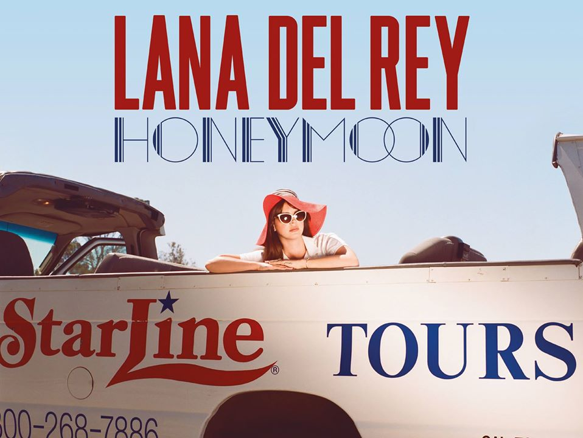

Burnt Norton (1935) là phần một trong bốn phần của bản trường ca Bốn khúc tứ tấu (Four Quartets), các phần khác gồm East Coker (1940), The Dry Salvages (1941) và Little Gidding (1942) của nhà thơ Mỹ đoạt giải Nobel Văn học năm 1948, T. S. Eliot. Bốn khúc tứ tấu chất đầy những biểu tượng của con số, màu sắc, nhịp điệu, thời gian thể hiện quan niệm thơ ca và triết học của Eliot. Bốn khúc tương đương với 4 mùa của năm, 4 quãng thời gian của một đời người, 4 chất liệu đầu tiên của vũ trụ (lửa, nước, đất và không khí).
Burnt Norton (Interlude) là đoạn đầu của bài thơ được Lana Del Rey trình bày lại như một sự chuyển tiếp giữa hai phần của album Honeymoon.
"Time present and time past
Are both perhaps present in time future,
And time future contained in time past.
If all time is eternally present
All time is unredeemable.
What might have been is an abstraction
Remaining a perpetual possibility
Only in a world of speculation.
What might have been and what has been
Point to one end, which is always present.
Footfalls echo in the memory
Down the passage which we did not take
Towards the door we never opened
Into the rose-garden."
- Bản dịch dựa trên wikipedia:
Hiện tại và quá khứ
Có lẽ đều có mặt ở tương lai
Và tương lai chứa đựng trong quá khứ.
Nếu mọi thời gian luôn là hiện tại
Mọi thời gian không thể nào bù đắp
Cái có thế xảy đến là trìu tượng
Mãi chỉ là có thể
Trong thế giới của sự suy đoán.
Cái đã có thể xảy ra và cái đã xảy ra
Luôn hướng đến đích duy nhất – hiện tại.
Những bước chân vang vọng trong tiềm thức
Qua con đường ta không qua
Mở cánh cửa ta không bao giờ mở
Vào vườn hồng.
Quá khứ: những gì đã xảy ra và để lại hệ quả ở hiện tại và có thể tương lai.
Hiện tại: những gì đang xảy ra, là hệ quả của hành động trong quá khứ, ảnh hưởng đến tương lai.
Tương lai: những gì sắp xảy ra phụ thuộc vào hành động trong hiện tại
Nhưng bạn có để ý gì không? Quá khứ từng là hiện tại, hiện tại vẫn là hiện tại, và tương lai sẽ là hiện tại. Có người cũng sẽ nói tương tự với quá khứ hay tương lai nhưng chúng ta không sống trong quá khứ mà sống trong hiện tại.
Chắc hẳn mỗi chúng ta đều đã từng băn khoăn “Giá như mình làm thế này thì mọi chuyện sẽ khác?”. Nếu mọi thời gian là hiện tại, thì những gì ta nói những gì ta làm là không thể rút lại. Những việc có thể xảy ra mãi chỉ là có thể, vậy những câu hỏi “Giá như?” kia quả thật là vô nghĩa. Nhưng suy cho cùng, cái câu hỏi ấy cũng là vì hiện tại, cũng xuất phát từ mong muốn của mỗi chúng ta về một cái tốt hơn có thể xảy ra.
Những bước chân vang vọng trong tiềm thức
Qua con đường ta không qua
Mở cánh cửa ta không bao giờ mở
Vào vườn hồng.
Đoạn thơ trên có thể hiểu theo hai cách: Những bước chân trong tiềm thức, những con đường ta không đi qua, cánh của ta không bao giờ mở chính là những hình ảnh tưởng tượng, những gì ta đã có thể nhưng không làm. Đi ngược lại với đó là hình ảnh vườn hồng sau cánh cửa mà vốn ta chưa hề mở, phải chăng đó là cái mà ta mường tượng, cái viễn cảnh của một hiện tại đầy hoa hồng mà đi cùng với nó lại là sự luyến tiếc.
Nhưng theo phân tích trên thì không lẽ bài thơ lại phủ nhận những gì nó nói từ trước hay sao. Vậy có thể những hình ảnh đấy là một sự gợi ý, nếu tôi viết lại đoạn dịch trên, tôi sẽ viết:
Những bước chân vang vọng trong tiềm thức
Qua con đường ta chưa từng qua
Mở cánh cửa ta chưa bao giờ mở
Vào vườn hồng.
Con đường ta chưa qua, ta sẽ qua, cánh của ta chưa mở, ta sẽ mở và cuối cùng ta cũng sẽ đến được vườn hồng. Cái mà bài thơ muốn truyền đạt chính là như vậy: hãy vứt bỏ sự luyến tiếc quá khứ đi mà chuyển nó thành hành động, đừng lo lắng cho tương lai mà sống vì hiện tại. Thời gian không đợi chờ một ai đâu nên hãy sống hết mình như chính Lana cũng đã nói rằng:
"LIVE FAST, DIE YOUNG, BE WILD AND HAVE FUN"

Biệt Thự Burnt Norton:
🌹 Vườn hồng trong đoạn Interlude có thể là một hình ảnh tả thực về vườn hồng có thực của căn biệt thự Burnt Norton. Căn biệt thự được gọi là Burnt Norton bởi nó được xây dựng trên nền móng của căn biệt thự cũ mà tại đó người chủ, William Kyte đã tự sát bằng cách thiêu rụi hoàn toàn chính căn biệt thự của mình vào khoảng những năm 1700. Hình ảnh không liên quan lắm đến ý nghĩa của đoạn Interlude nhưng được nhà thơ nhắc đến một cách hàm ý ở đoạn sau của bài thơ.